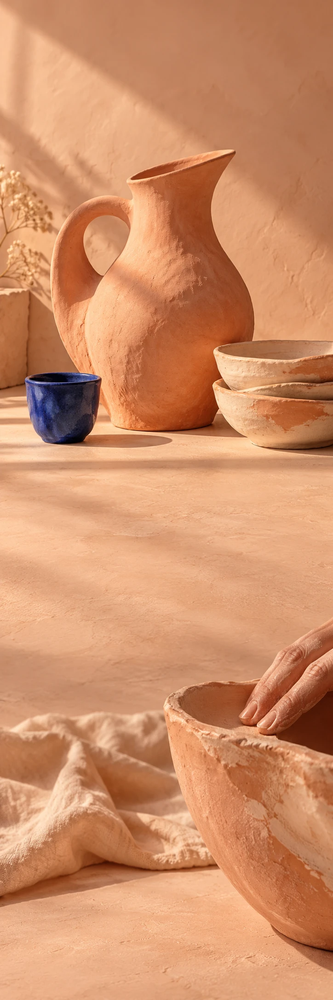

VORM
vol leven.

Het mag
een beetje
anders.
Een oor dat afbuigt. Een glazuur dat het licht vangt. De mooie dingen hoeven niet allemaal op elkaar te lijken.
Om te schenken.
Om neer te zetten.
Om elke dag te gebruiken.
Net niet rond.
Helemaal goed.
Helemaal goed.